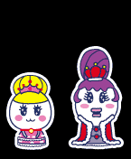
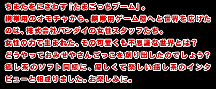
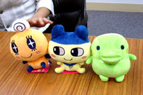
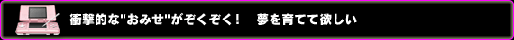
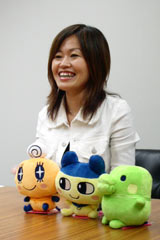
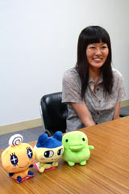

--まず、ソフトが誕生した経緯を教えて下さい。
 本間：約８年前に大流行した携帯ゲーム機『たまごっち』が復活し、今春新シリーズが登場したんですが、なんとなく流行の予感がしたんですね。８年前もブームに合わせてＧＢＡや６４でゲーム化し、大ヒットしていたこともあるので、じゃあ今回もゲーム化しよう！と企画がたちあがりました。
本間：約８年前に大流行した携帯ゲーム機『たまごっち』が復活し、今春新シリーズが登場したんですが、なんとなく流行の予感がしたんですね。８年前もブームに合わせてＧＢＡや６４でゲーム化し、大ヒットしていたこともあるので、じゃあ今回もゲーム化しよう！と企画がたちあがりました。
--岡さんは、どういった活動をされていたんでしょう？
岡：私はイベント関連などに携わっていました。連載している学年誌や少女向け漫画雑誌との連動企画が夏にありましたので、そちらの方面です。
--女の子向けのソフトなんですね。
本間：そうです。『たまごっち』は幼稚園から中高生まで本当に幅広い層に人気なんですが、今回は中でも特に盛り上がっている小学生の女子をＤＳのターゲットにしました。開発をお願いした七音社さん、猿楽庁さんにも女性のスタッフが多く、とは言え小学生といえば大昔の事なので、その当時を思い出しながらこのゲームのコンセプトを出し合いました。そういうこともあり、本当に女性ならではのアイデアやかわいらしさがたくさん詰まっています。当然男性のスタッフもたくさんいらっしゃいましたが、どちらかというと女性スタッフのアイデアやワガママ？をうまくゲームという形にまとめてくださったという感じでした。
--"おみせやさん"を取り上げたのはなぜですか？
本間：小学生の頃は学校で「将来何になりたい？」なんて聞かれることが多かったと思うんですが、だいたい女の子って「お花屋さん」や「ケーキ屋さん」など、とにかく「おみせやさん」になりたいって言うんですよね。ただ、次の日同じ質問をすると「くだものやさん」ってその「おみせ」がコロコロ変わるんですよ。そういうコロコロかわる「夢」をゲームでかなえられないかな、というのが「おみせやさん」の始まりです。
--おもちゃのたまごっちって、いますごいブームなんですよね。
本間：はい。先ほども言いましたが本当に大人気で一人で２〜３個もっている子もたくさんいます。なのでＤＳには『たまごっち』の育成要素は必要ないと思っていたのですが、周りからは『たまごっち』のような「キャラクターとの触れ合い」が欲しいという要望があり、急遽「おせわ」をいれました。でも実際遊んでみると、たまごっちたちに洋服を着せたり、おやつをあげて喜んでくれたりするリアクションがかわいくて、追加してよかったと思っています！
--彼ら、非常にシュールというか…可愛いけど不思議ですよね(笑)。

本間：そうなんです。リアクションを見ていると、やっぱりシュールなんですよね。そこを笑って欲しいなと。キャラクターには性格や住んでいる街など細かい設定があるので、それぞれ個性的な会話やしぐさを楽しむ事ができます。特にキャラクターたちの声は今回ＤＳで始めて聞くことになると思います。一瞬聞いただけでは何を言っているのかわからないんですが、よく聞くとちゃんと日本語をしゃべっているのでそこにも注目していただければと思います。
--ちょっと侮ってましたけど、深いですね！
本間：そうなんです、色々設定があるんです(笑)。お客さんも８０人以上登場するんです！
--ＤＳならではの機能を使うということで、開発は苦労されましたか？
本間：実はＤＳで別の企画があり、そこに『たまごっち』をのせてみたらすごくよかったんです。それでできたのがこの『プチプチおみせっち』だったのでＤＳであることは前提でした。なので、ＤＳならではの苦労というと…。ただＤＳといったらやはりタッチペンですよね。最近の子供は「ひだりきき」の子が多いので、最後ギリギリのところで「ひだりきき」「みぎきき」両対応の仕様を追加してもらいました。たぶん開発会社の方には迷惑をかけたと思います。
--岡さんが携わっていたイベントでの反応はいかがでした？
岡：６月からスタートしたイベントの各会場で、それぞれ体験版を配信していたんですが、やっぱり女の子がたくさん来て下さいましたね。でも、大きい男の子も来てくれていて、物陰でこっそりダウンロードしてたり…という感じでしたよ(笑)。遊んだ後で、自分が作った作品の出来なんかを見せに来てくれた方もいて、嬉しかったです。
|


--数あるおみせやさんのなかで、お気に入りはどれでしょう？
岡：私は「ライブハウスやさん」ですね。
--『ライブハウスやさん』…………ですか？
岡：その辺を深く考えちゃいけません(笑)。音ゲーっぽい感じで、リズムに合わせて操作するというゲームなんですよ。あ、プロモーション用にたまごっちの歌があるんですけど…。
--歌というと？

本間：私たちスタッフが作詞した歌で、店頭用のプロモーションビデオやイベントで流しています。これはですね、メキシコの曲のジャンルで『マリアッチ』というものがあって、語呂も「たまごっち…マリアッチ…ああ、ピッタリ！」ということで『たまごっち』でマリアッチを作ろうということになりました(笑)。ただ、いざ作詞と言っても素人ですし全く浮かばなかったので、マリアッチの生演奏が聞けるメキシコ料理屋さんに行き、本場の雰囲気を味わいながら作詞しました。プロデュースはソフト同様七音社さんにお願いし、歌っているのも本場メキシコ人の方々。彼らの片言の日本語がなんだかホッとする、なんとも言えない雰囲気の素敵な曲になりました。
--本間さんは作詞の才能もあるんですね。ＣＤとかにならないんですか？
本間：いまの所、未定です。…なったら印税生活ですね(笑)。
--では話を戻しまして、本間さんオススメのおみせはなんでしょう？
本間：「たこやきやさん」ですね。お祭や街中でよく売っていますが実際作ることはあまりないじゃないですか！関西の方は出来て当たり前みたいですけど、それ以外の地域ではたこ焼きを作るのってちょっと憧れだと思うんです。
岡：あと、「ヘアメイクやさん」もかなり衝撃的なんですが。
--その発言が衝撃的ですよ…気になるじゃないですか(笑)。
岡：いや、衝撃的なんです(笑)。お客さんが顔を洗ってたら、「こんなになっちゃった！」って福笑いみたいにゴチャゴチャになってるんです。それをタッチペンで元の顔に戻してあげるという。
--確かに衝撃的ですね。あり得ないですね(笑)。
本間：あと、ゲームが進んでいくうちに複合店というのが現れます。単店同士がくっついて、例えば「ヘアメイクはいしゃさん」が出来たりするんです。歯に色を塗ったり文字を書いたり、かなりファンキーな感じです。
--こういう遊び方をして欲しい、というのはありますか？
本間：好きなお店を見つけてもらって、友達同士で「こんなのができたよ」って自慢しあって欲しいですね。きっと楽しいはずですから。

岡：着替えなどのアイテム集めはかなり楽しいと思います。集めるのって面白いので、ぜひコンプリートして下さい。
本間：それと、９月前半には全国のゲーム関連のお店の店頭で、体験版が置かれる予定ですので、ぜひ遊んで下さい。初回生産分※には、ＤＳとたまごっちが入るポケットのついた『プチプチＤＳポーチ』ももらえますのでお得ですよ。ぜひＤＳもたまごっちもポーチに入れて持ち歩いて欲しいですね。
岡：それからクラブニンテンドーの景品で、限定カラーのたまごっちが抽選で２０００名に当たります！ソフトを買って頂いてシリアルナンバーを登録して下さい。
--では、最後にメッセージをお願いします。
岡：おみせっちで夢を育てて下さい！
本間：女の子向けというコンセプトで作ってはいますが、大人でも楽しめる内容になっていますので、是非買ってたっぷり遊んでいただきたいです！
--どうもありがとうございました！
|
※数に限りがあります。店頭にてご確認ください。
|
|